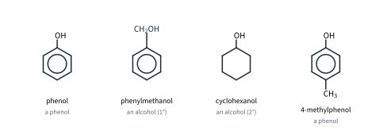
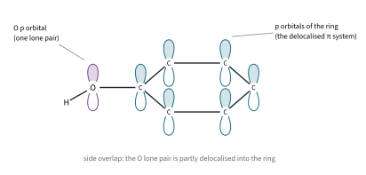
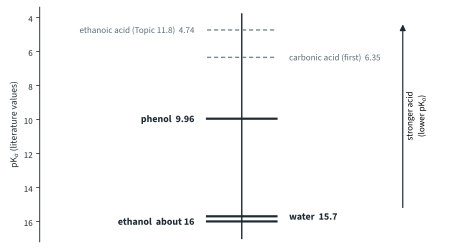
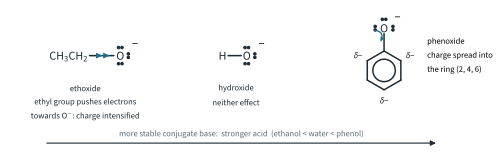
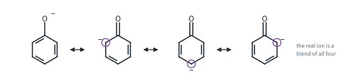
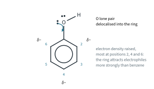
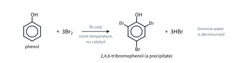
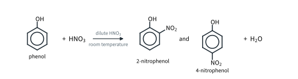
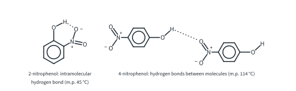

Hydroxy Compounds 2
Topic 11.6 · Hydroxy Compounds Part 2
On this page
Introduction
In phenol, C6H5OH, the –OH group is bonded directly to a carbon atom of a benzene ring. That one difference from an alcohol changes its chemistry: phenol is a far stronger acid than ethanol, and its ring reacts with electrophiles much more readily than benzene does. Phenylmethanol, C6H5CH2OH, has a benzene ring too, but its –OH is on a CH2 group, so it is an alcohol (a primary one) and behaves like the alcohols of Part 1.

Phenol is a colourless solid at room temperature (m.p. 41 °C) and is only slightly soluble in water: about 8 g dissolves in 100 g of water at 20 °C (literature values). It is toxic and burns the skin. As "carbolic acid" it was the first antiseptic used in surgery, by Joseph Lister in the 1860s.
The bonding in phenol
The oxygen atom of phenol has two lone pairs. One of them is in a p orbital that is parallel to the p orbitals of the ring carbons, so it overlaps sideways with the ring's delocalised π system. The lone pair is partly delocalised into the ring. (Chlorobenzene is the same: Topic 11.3.)

This has three consequences, and they are the main ideas of this Part:
- Phenol is more acidic than water and alcohols. When phenol loses H+, the negative charge on the oxygen can also spread into the ring (below).
- The ring is activated. The extra electron density in the ring makes it attack electrophiles far more readily than benzene (below).
- The C–O bond is strengthened. It gains some double-bond character. (Beyond the syllabus: so, unlike ethanol, phenol does not react with HX to replace the –OH by a halogen.)
Phenol as an acid
Phenol is a weak acid. In water it gives up a proton to form the phenoxide ion:
C6H5OH(aq) + H2O(l) ⇌ C6H5O−(aq) + H3O+(aq) Ka = 1.1 × 10−10 mol dm−3, pKa = 9.96
(literature values; Ka and pKa are in Topic 10 Part 1). It is a very weak acid, far weaker than ethanoic acid (pKa 4.74), but much stronger than ethanol.
Worked example 1. Calculate the pH of 0.100 mol dm−3 aqueous phenol. Compare it with 0.100 mol dm−3 ethanol.
(Phenol is a weak monobasic acid, so use [H+] = √(Kac), as in Topic 10 Part 1. About 0.9 mol of phenol dissolves per dm3, so this solution can be made.)
[H+] = √(1.1 × 10−10 × 0.100) = √(1.1 × 10−11) = 3.32 × 10−6 mol dm−3
pH = −lg(3.32 × 10−6) = 5.48
Only 3.32 × 10−6 / 0.100 = 3.3 × 10−5 of the molecules (0.0033 %) are dissociated, so the approximation is excellent. For ethanol (pKa about 16), √(10−16 × 0.100) = 3 × 10−9 mol dm−3, far less than the 1.00 × 10−7 mol dm−3 of H+ that water itself provides, so 0.100 mol dm−3 ethanol is neutral: pH 7.00. (0.100 mol dm−3 ethanoic acid has pH 2.87.)
Reaction with bases
Phenol is acidic enough to react with a strong base. It dissolves in aqueous sodium hydroxide, although it is only slightly soluble in water, giving a colourless solution of sodium phenoxide:
C6H5OH(s) + NaOH(aq) → C6H5O−Na+(aq) + H2O(l)
Adding a strong acid, such as dilute hydrochloric acid, reverses the reaction. The phenoxide ion is a base, it takes the H+ back, and phenol separates out, so the solution turns cloudy:
C6H5O−(aq) + H+(aq) → C6H5OH(s)
Ethanol shows no visible reaction with NaOH(aq). Ethanol is a slightly weaker acid than water, so in dilute NaOH(aq), where water molecules far outnumber the ethanol, it is too weak an acid to be noticeably deprotonated: very little ethoxide forms in CH3CH2OH + OH− ⇌ CH3CH2O− + H2O. (The same equilibrium explains Part 1: ethoxide added to water gives a strongly alkaline solution.)
Phenol gives no effervescence with aqueous sodium carbonate or sodium hydrogencarbonate. To release CO2, an acid must protonate HCO3− to carbonic acid, and phenol (pKa 9.96) is a much weaker acid than carbonic acid (pKa 6.35). Carboxylic acids are stronger than carbonic acid and do fizz with carbonates (Topic 11.8 Part 1), so this is how phenol is told apart from a carboxylic acid.1
Reaction with sodium
Like ethanol (Part 1, section 3), phenol reacts with sodium: the O–H bond breaks, hydrogen is given off and sodium phenoxide forms. Phenol is a solid, so it is first melted by gentle warming (or dissolved in a dry, unreactive solvent):
2C6H5OH + 2Na → 2C6H5O−Na+ + H2
Effervescence is seen, and the sodium dissolves.
Relative acidity of water, phenol and ethanol
All three are Brønsted-Lowry acids: each can donate a proton from an O–H group to a water molecule.
CH3CH2OH(aq) + H2O(l) ⇌ CH3CH2O−(aq) + H3O+(aq)
H2O(l) + H2O(l) ⇌ OH−(aq) + H3O+(aq)
C6H5OH(aq) + H2O(l) ⇌ C6H5O−(aq) + H3O+(aq)
The pKa values (literature values) put them in order:
| Acid | Conjugate base | Ka / mol dm−3 | pKa |
|---|---|---|---|
| ethanol | ethoxide, CH3CH2O− | about 1 × 10−16 | about 16 |
| water2 | hydroxide, OH− | 1.8 × 10−16 | 15.7 |
| phenol | phenoxide, C6H5O− | 1.1 × 10−10 | 9.96 |

To explain the order, compare the conjugate bases. The more stable the anion left behind when the proton goes, the further the equilibrium lies to the right, and the stronger the acid.

- Phenoxide is the most stable. The negative charge on the oxygen is not held on the oxygen alone: one lone pair is delocalised into the benzene ring through the p orbital overlap of Fig 2, so the charge is spread over the oxygen and the ring (mainly over carbons 2, 4 and 6). Spreading a charge stabilises the ion, so phenol is a stronger acid than water.
- Ethoxide is the least stable. The ethyl group is electron-donating (Topic 11.3). It pushes electron density towards the O−, which intensifies the negative charge. Ethoxide is less stable than hydroxide, so ethanol is a weaker acid than water.3
- Hydroxide has neither effect, and lies in between.
The order shows up in the test tube:
| Ethanol | Water | Phenol | |
|---|---|---|---|
| Sodium | steady fizzing; Na sinks | vigorous fizzing; Na floats and melts | fizzing (molten phenol) |
| NaOH(aq) | no visible reaction | – | phenol dissolves: sodium phenoxide |
| Na2CO3(aq) | no effervescence | – | no effervescence |
| pH of a 0.100 mol dm−3 solution | 7.00 | 7.00 (pure water) | 5.48 |

Further example: substituted phenols. The same argument works for other groups on the ring (literature values). 4-Nitrophenol (pKa 7.15) is a stronger acid than phenol: the electron-withdrawing NO2 group draws the negative charge of the anion further, onto the NO2 group as well, so the anion is more stable. 4-Methylphenol (pKa 10.26) is weaker than phenol: the electron-donating CH3 group intensifies the charge. So the order is 4-methylphenol < phenol < 4-nitrophenol.
Worked example 2. Three unlabelled bottles contain ethanol, aqueous phenol and ethanoic acid. Suggest tests to identify them.
(You want tests that each pick out one compound, with something to see.) Add aqueous sodium carbonate to a sample of each: only ethanoic acid fizzes (CO2, which turns limewater milky). Then add bromine water to the other two: phenol decolourises it at once and gives a white precipitate (below), while ethanol leaves it orange. (Warm alkaline aqueous iodine would also confirm ethanol: a pale yellow precipitate of CHI3, Part 1.)
Reactions of the benzene ring
Benzene reacts with electrophiles only with a catalyst and, for nitration, with a concentrated acid mixture (Topic 11.4 Part 2). Phenol's ring reacts far more easily. The lone pair on the oxygen is delocalised into the ring, which raises the electron density of the ring, most of all at positions 2, 4 and 6. The ring attracts electrophiles more strongly, and is even able to polarise a bromine molecule without a halogen carrier. The mechanism is the electrophilic substitution of Topic 11.3, and the new groups go to positions 2, 4 and 6.

Bromination
Phenol reacts with Br2(aq) (bromine water) at room temperature, with no catalyst. Three H atoms are replaced at once, at positions 2, 4 and 6:

C6H5OH(aq) + 3Br2(aq) → C6H2Br3OH(s) + 3HBr(aq)
What you see: the orange bromine water is decolourised and a white precipitate of 2,4,6-tribromophenol forms, with an antiseptic smell. Compare benzene, which does not react with bromine water at all: it needs Br2, AlBr3 catalyst, room temperature, with no water present, and gives only bromobenzene, with one Br atom (Topic 11.4 Part 2). Phenylamine reacts with bromine water in the same way as phenol (Topic 11.9 Part 1).
Worked example 3. What mass of 2,4,6-tribromophenol (Mr 330.7) can be made from 0.940 g of phenol, and what amount of bromine does it need?
n(phenol) = 0.940 / 94.0 = 0.0100 mol mass of product = 0.0100 × 330.7 = 3.31 g
n(Br2) = 3 × 0.0100 = 0.0300 mol (4.79 g)
Nitration
Phenol is nitrated by dilute nitric acid at room temperature, giving a mixture of 2-nitrophenol and 4-nitrophenol:4

C6H5OH + HNO3 → C6H4(OH)NO2 + H2O (2-nitrophenol)
C6H5OH + HNO3 → C6H4(OH)NO2 + H2O (4-nitrophenol)
Benzene needs a mixture of concentrated HNO3 and concentrated H2SO4 at 50 °C to make the electrophile NO2+ (Topic 11.4 Part 2). Phenol's activated ring does not need it.
Further example: separating the two nitrophenols. 2-Nitrophenol melts at 45 °C, but 4-nitrophenol at 114 °C (literature values). In 2-nitrophenol the O–H group is next to the NO2 group, and forms a hydrogen bond with it within the same molecule (intramolecular). That leaves fewer hydrogen bonds between molecules, so the forces between molecules are weaker. In 4-nitrophenol the groups are too far apart, so each O–H hydrogen-bonds to a neighbouring molecule (intermolecular; Topic 2 Part 3). 2-Nitrophenol is volatile in steam, so the mixture is separated by steam distillation.

Compare the two rings:
| Benzene | Phenol | |
|---|---|---|
| With bromine | Br2, AlBr3 catalyst, room temperature (no water present); bromobenzene (one Br) | Br2(aq) (bromine water), room temperature, no catalyst; 2,4,6-tribromophenol (three Br), white precipitate |
| Nitration | concentrated HNO3 and concentrated H2SO4, 50 °C; nitrobenzene | dilute HNO3, room temperature; 2-nitrophenol and 4-nitrophenol |
| Why | delocalised π electrons only | O lone pair delocalised into the ring: more electron-rich, especially at 2, 4 and 6 |
Comparing ethanol and phenol
| Reagent | Ethanol | Phenol |
|---|---|---|
| Na | H2 given off; sodium ethoxide | H2 given off; sodium phenoxide |
| NaOH(aq) | no visible reaction | reacts: sodium phenoxide (phenol dissolves) |
| Na2CO3(aq) | no reaction | no effervescence |
| HX, heat | halogenoalkane | no reaction (beyond the syllabus: the C–O bond is strengthened) |
| Br2(aq) (bromine water) | no reaction | decolourised; white precipitate of 2,4,6-tribromophenol |
| dilute HNO3, room temperature | no nitration | 2-nitrophenol and 4-nitrophenol |
Additional information
- Beyond the syllabus: phenol is a slightly stronger acid than the hydrogencarbonate ion (pKa 10.33, literature value), so with Na2CO3(aq) it can turn some CO32− into HCO3− (C6H5OH + CO32− → C6H5O− + HCO3−) and it dissolves better than in water, but no gas is given off. ↩
- Beyond the syllabus: water's value comes from Ka = Kw / [H2O] = (1.00 × 10−14) / 55.5 = 1.8 × 10−16 mol dm−3. Some books use a different convention and quote 14 for water. The values for water and ethanol are approximate; the point to learn is the order. ↩
- Beyond the syllabus: in water, solvation also matters. The bulkier ethoxide ion is less well surrounded by water molecules than the small hydroxide ion, so it is less stabilised by them. ↩
- Beyond the syllabus: concentrated nitric acid nitrates phenol three times, giving 2,4,6-trinitrophenol. ↩